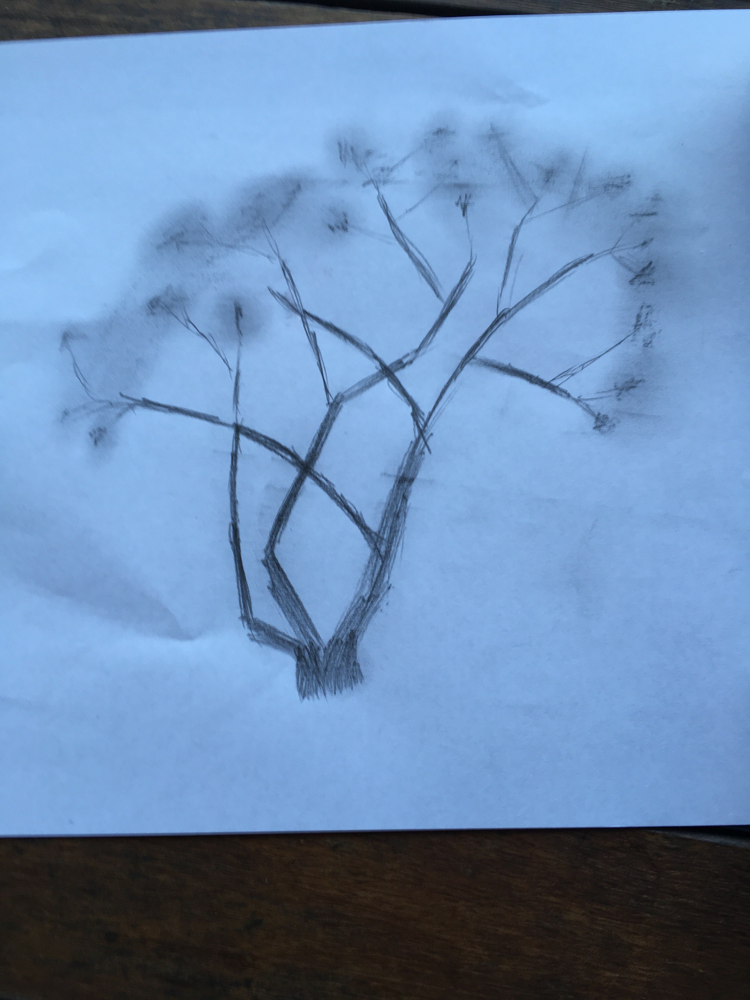
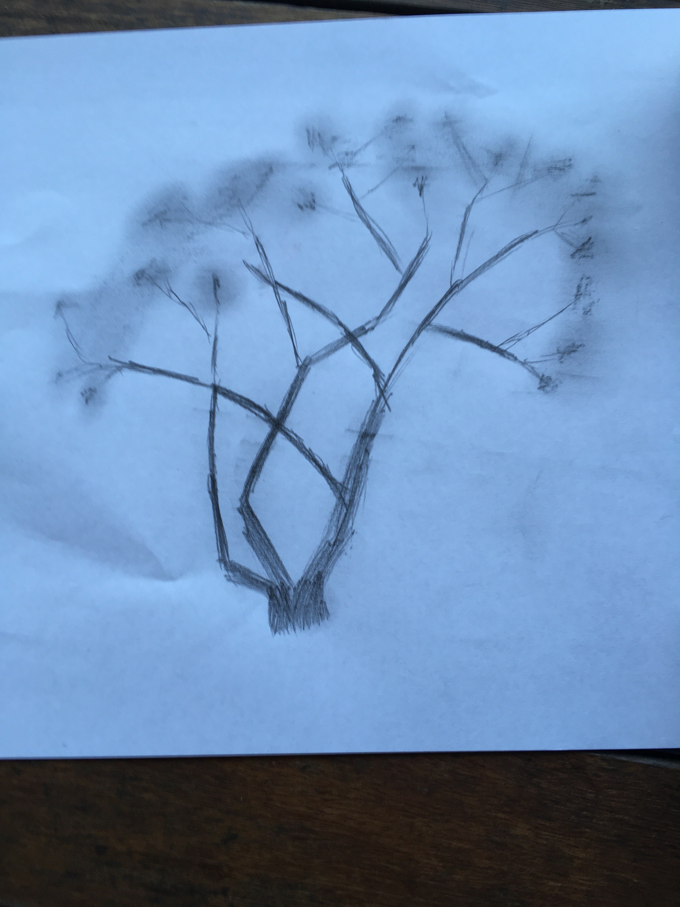

Jacaranda Tree
By IDetective
Tried drawing the jacaranda outside the event room, had no idea how to do the leaves so i tried just smudging it
Tried drawing the jacaranda outside the event room, had no idea how to do the leaves so i tried just smudging it
There is definitely improvement from the image you did yesterday! The shading effect looks good, but as you said it was smuding. A more deliberate control of shading would make the art work even better. As for lips, it's one of the harder parts to draw, don't get discouraged and try out different approach to see what you prefer.
There is definitely improvement from the image you did yesterday! The shading effect looks good, but as you said it was smuding. A more deliberate control of shading would make the art work even better. As for lips, it's one of the harder parts to draw, don't get discouraged and try out different approach to see what you prefer.
it lools super cool but as AstroArtist said the addition of smaller brached or even emphasis of some flower clusters could look cool
I think you could give it a bit more detail by doing lots of small branches around the head. You can basically just do then as scribbles, the visual noise helps add a bit of depth to the image. It's really good though.